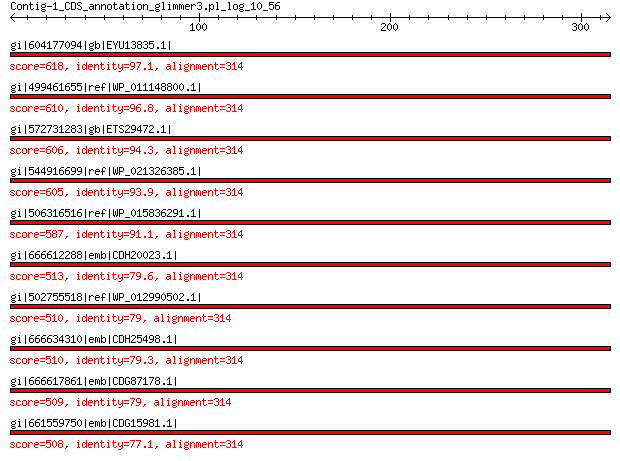

bitscore colors: <40, 40-50 , 50-80, 80-200, >200
 BLASTP 2.2.31+
Reference: Stephen F. Altschul, Thomas L. Madden, Alejandro A.
Schaffer, Jinghui Zhang, Zheng Zhang, Webb Miller, and David J.
Lipman (1997), "Gapped BLAST and PSI-BLAST: a new generation of
protein database search programs", Nucleic Acids Res. 25:3389-3402.
Reference for composition-based statistics: Alejandro A. Schaffer,
L. Aravind, Thomas L. Madden, Sergei Shavirin, John L. Spouge, Yuri
I. Wolf, Eugene V. Koonin, and Stephen F. Altschul (2001),
"Improving the accuracy of PSI-BLAST protein database searches with
composition-based statistics and other refinements", Nucleic Acids
Res. 29:2994-3005.
Database: All non-redundant GenBank CDS translations+PDB+SwissProt+PIR+PRF
excluding environmental samples from WGS projects
49,011,213 sequences; 17,563,301,199 total letters
Query= Contig-1_CDS_annotation_glimmer3.pl_log_10_56
Length=314
Score E
Sequences producing significant alignments: (Bits) Value
gi|604177094|gb|EYU13835.1| birA, biotin-(acetyl-CoA-carboxylase... 618 0.0
gi|499461655|ref|WP_011148800.1| bifunctional biotin--[acetyl-Co... 610 0.0
gi|572731283|gb|ETS29472.1| birA, biotin-(acetyl-CoA-carboxylase... 606 0.0
gi|544916699|ref|WP_021326385.1| bifunctional biotin--[acetyl-Co... 605 0.0
gi|506316516|ref|WP_015836291.1| bifunctional biotin--[acetyl-Co... 587 0.0
gi|666612288|emb|CDH20023.1| bifunctional: biotin-(acetylCoA car... 513 2e-180
gi|502755518|ref|WP_012990502.1| bifunctional biotin--[acetyl-Co... 510 3e-179
gi|666634310|emb|CDH25498.1| bifunctional: biotin-(acetylCoA car... 510 3e-179
gi|666617861|emb|CDG87178.1| bifunctional: biotin-(acetylCoA car... 509 7e-179
gi|661559750|emb|CDG15981.1| Bifunctional protein BirA [Includes... 508 1e-178
>gi|604177094|gb|EYU13835.1| birA, biotin-(acetyl-CoA-carboxylase) ligase [Photorhabdus luminescens
BA1]
Length=319
Score = 618 bits (1594), Expect = 0.0, Method: Compositional matrix adjust.
Identities = 305/314 (97%), Positives = 310/314 (99%), Gaps = 0/314 (0%)
Query 1 VPLQLIKILSDGDVHSGQQLGQDLGMSRAGINKHIQTIREWGIELETTPGKGYSLVEPMQ 60
VPLQLIKILSDGDVHSGQQLG+DLGMSRAGINKHIQTIREWGIELETTPGKGYSL+ PMQ
Sbjct 6 VPLQLIKILSDGDVHSGQQLGKDLGMSRAGINKHIQTIREWGIELETTPGKGYSLMAPMQ 65
Query 61 LLDESTIFQYLPQDRITVLPVIDSTNQYLLERLSELKSGDACVAEYQYAGRGRRGRKWVS 120
LLDESTIFQYLPQDRITVLPVIDSTNQYLLERLS+LKSGDACVAEYQYAGRGRRGRKWVS
Sbjct 66 LLDESTIFQYLPQDRITVLPVIDSTNQYLLERLSDLKSGDACVAEYQYAGRGRRGRKWVS 125
Query 121 PFGKNLYLSMYWRLEQGPAAAIGLSLVVGIVIAEVLHRFGADRIRVKWPNDLYLDDKKLA 180
PFGKNLYLSMYWRLEQGPAAAIGLSLVVGIVIAEVLHR GADRIRVKWPNDLYLDDKKLA
Sbjct 126 PFGKNLYLSMYWRLEQGPAAAIGLSLVVGIVIAEVLHRLGADRIRVKWPNDLYLDDKKLA 185
Query 181 GILVELIGKTGDAAQVVIGAGINISMDHKDEESINQQWINLLQAGIEVDRNKLAVEIILD 240
GILVELIGKTGDAAQVVIGAGINISMDHKDEESINQQWINLLQ+GIE+DRNKLAVEIILD
Sbjct 186 GILVELIGKTGDAAQVVIGAGINISMDHKDEESINQQWINLLQSGIEIDRNKLAVEIILD 245
Query 241 LRKALIQFENEGLSSFVSRWFELDNFMDRPVKLIIGSQEVYGIARGINQQGALLLDQNGV 300
LRKALIQFENEGLSSFVSRWFELDNFMDR VKLIIG QEVYGIARGINQQGALLLDQNGV
Sbjct 246 LRKALIQFENEGLSSFVSRWFELDNFMDRSVKLIIGRQEVYGIARGINQQGALLLDQNGV 305
Query 301 ITPYIGGEISLRGC 314
ITPYIGGEISLRGC
Sbjct 306 ITPYIGGEISLRGC 319
>gi|499461655|ref|WP_011148800.1| bifunctional biotin--[acetyl-CoA-carboxylase] synthetase/biotin
operon repressor [Photorhabdus luminescens]
gi|37528549|ref|NP_931894.1| biotin--protein ligase [Photorhabdus luminescens subsp. laumondii
TTO1]
gi|36787987|emb|CAE17104.1| bifunctional protein [Includes: biotin operon repressor; biotin-[acetyl-CoA-carboxylase]
synthetase (biotin-protein ligase)]
[Photorhabdus luminescens subsp. laumondii TTO1]
Length=319
Score = 610 bits (1574), Expect = 0.0, Method: Compositional matrix adjust.
Identities = 304/314 (97%), Positives = 308/314 (98%), Gaps = 0/314 (0%)
Query 1 VPLQLIKILSDGDVHSGQQLGQDLGMSRAGINKHIQTIREWGIELETTPGKGYSLVEPMQ 60
VPLQLIKILSDG+VHSGQQLGQ LGMSRAGINKHIQTIREWGIELETT GKGYSL+ PMQ
Sbjct 6 VPLQLIKILSDGEVHSGQQLGQYLGMSRAGINKHIQTIREWGIELETTLGKGYSLMAPMQ 65
Query 61 LLDESTIFQYLPQDRITVLPVIDSTNQYLLERLSELKSGDACVAEYQYAGRGRRGRKWVS 120
LLDESTI QYLPQDRITVLPVIDSTNQYLLERLSELKSGDACVAEYQYAGRGRRGRKWVS
Sbjct 66 LLDESTILQYLPQDRITVLPVIDSTNQYLLERLSELKSGDACVAEYQYAGRGRRGRKWVS 125
Query 121 PFGKNLYLSMYWRLEQGPAAAIGLSLVVGIVIAEVLHRFGADRIRVKWPNDLYLDDKKLA 180
PFGKNLYLSMYWRLEQGPAAAIGLSLVVGIVIAEVLHRFGA RIRVKWPNDLYLDDKKLA
Sbjct 126 PFGKNLYLSMYWRLEQGPAAAIGLSLVVGIVIAEVLHRFGAGRIRVKWPNDLYLDDKKLA 185
Query 181 GILVELIGKTGDAAQVVIGAGINISMDHKDEESINQQWINLLQAGIEVDRNKLAVEIILD 240
GILVELIGKTGDAAQVVIGAGINISMDHKDEE INQQWINLLQAGI+VDRNKLAVEIILD
Sbjct 186 GILVELIGKTGDAAQVVIGAGINISMDHKDEEPINQQWINLLQAGIQVDRNKLAVEIILD 245
Query 241 LRKALIQFENEGLSSFVSRWFELDNFMDRPVKLIIGSQEVYGIARGINQQGALLLDQNGV 300
LRKALIQFEN+GLSSFVSRWFELDNFMDRPVKLIIGSQEVYGIARGINQQGALLLDQNGV
Sbjct 246 LRKALIQFENKGLSSFVSRWFELDNFMDRPVKLIIGSQEVYGIARGINQQGALLLDQNGV 305
Query 301 ITPYIGGEISLRGC 314
ITPYIGGEISLRGC
Sbjct 306 ITPYIGGEISLRGC 319
>gi|572731283|gb|ETS29472.1| birA, biotin-(acetyl-CoA-carboxylase) ligase [Photorhabdus temperata
subsp. khanii NC19]
Length=319
Score = 606 bits (1563), Expect = 0.0, Method: Compositional matrix adjust.
Identities = 296/314 (94%), Positives = 305/314 (97%), Gaps = 0/314 (0%)
Query 1 VPLQLIKILSDGDVHSGQQLGQDLGMSRAGINKHIQTIREWGIELETTPGKGYSLVEPMQ 60
VPLQLIKILSDG+VHSGQQLGQDLGMSRAGINKHIQTIREWGIELET PGKGYS V PMQ
Sbjct 6 VPLQLIKILSDGEVHSGQQLGQDLGMSRAGINKHIQTIREWGIELETAPGKGYSFVAPMQ 65
Query 61 LLDESTIFQYLPQDRITVLPVIDSTNQYLLERLSELKSGDACVAEYQYAGRGRRGRKWVS 120
LLDE TI QYLPQDRI VLPVIDSTNQYLLERLSELKSGDACVAEYQYAGRGRRGRKW+S
Sbjct 66 LLDEYTILQYLPQDRIAVLPVIDSTNQYLLERLSELKSGDACVAEYQYAGRGRRGRKWIS 125
Query 121 PFGKNLYLSMYWRLEQGPAAAIGLSLVVGIVIAEVLHRFGADRIRVKWPNDLYLDDKKLA 180
PFGKNLYLSMYWRLEQGPAAAIGLSLVVGIVIAEVLHRFGADRIRVKWPNDLYLDDKKLA
Sbjct 126 PFGKNLYLSMYWRLEQGPAAAIGLSLVVGIVIAEVLHRFGADRIRVKWPNDLYLDDKKLA 185
Query 181 GILVELIGKTGDAAQVVIGAGINISMDHKDEESINQQWINLLQAGIEVDRNKLAVEIILD 240
GILVEL+GKTGDAAQVVIGAGINI+MDHKDEESINQQW+NL QAGIE+DRNKLA EIILD
Sbjct 186 GILVELMGKTGDAAQVVIGAGINIAMDHKDEESINQQWVNLQQAGIEIDRNKLAAEIILD 245
Query 241 LRKALIQFENEGLSSFVSRWFELDNFMDRPVKLIIGSQEVYGIARGINQQGALLLDQNGV 300
LRKAL+QFENEGLSSF+SRWFELDNF+DRPVKLIIGSQEVYGI RGINQQGALLLDQNGV
Sbjct 246 LRKALMQFENEGLSSFISRWFELDNFIDRPVKLIIGSQEVYGIVRGINQQGALLLDQNGV 305
Query 301 ITPYIGGEISLRGC 314
ITPYIGGEISLRGC
Sbjct 306 ITPYIGGEISLRGC 319
>gi|544916699|ref|WP_021326385.1| bifunctional biotin--[acetyl-CoA-carboxylase] synthetase/biotin
operon repressor [Photorhabdus temperata]
gi|530707490|gb|EQB98439.1| bifunctional biotin--[acetyl-CoA-carboxylase] synthetase/biotin
operon repressor [Photorhabdus temperata subsp. temperata
M1021]
gi|550872907|gb|ERT12059.1| bifunctional biotin--[acetyl-CoA-carboxylase] synthetase/biotin
operon repressor [Photorhabdus temperata J3]
Length=319
Score = 605 bits (1561), Expect = 0.0, Method: Compositional matrix adjust.
Identities = 295/314 (94%), Positives = 307/314 (98%), Gaps = 0/314 (0%)
Query 1 VPLQLIKILSDGDVHSGQQLGQDLGMSRAGINKHIQTIREWGIELETTPGKGYSLVEPMQ 60
VPLQLIKILSDG+VHSGQQLGQDLGMSRAGINKHIQTIR+WGIELET PGKGYSL+ PMQ
Sbjct 6 VPLQLIKILSDGEVHSGQQLGQDLGMSRAGINKHIQTIRKWGIELETAPGKGYSLMAPMQ 65
Query 61 LLDESTIFQYLPQDRITVLPVIDSTNQYLLERLSELKSGDACVAEYQYAGRGRRGRKWVS 120
LLDE TI QYLPQDRI VLPVIDSTNQYLLERLSELKSGDACVAEYQYAGRGRRGRKW+S
Sbjct 66 LLDECTILQYLPQDRIAVLPVIDSTNQYLLERLSELKSGDACVAEYQYAGRGRRGRKWIS 125
Query 121 PFGKNLYLSMYWRLEQGPAAAIGLSLVVGIVIAEVLHRFGADRIRVKWPNDLYLDDKKLA 180
PFGKNLYLSMYWRLEQGPAAAIGLSLVVGIVIAEVLHRFGAD+IRVKWPNDLYLDDKKLA
Sbjct 126 PFGKNLYLSMYWRLEQGPAAAIGLSLVVGIVIAEVLHRFGADKIRVKWPNDLYLDDKKLA 185
Query 181 GILVELIGKTGDAAQVVIGAGINISMDHKDEESINQQWINLLQAGIEVDRNKLAVEIILD 240
GILVEL+GKTGDAAQVVIGAGINI+MDHKDE SINQQW+NL QAGIE+DRNKLAVEIIL+
Sbjct 186 GILVELMGKTGDAAQVVIGAGINIAMDHKDEGSINQQWVNLQQAGIEIDRNKLAVEIILE 245
Query 241 LRKALIQFENEGLSSFVSRWFELDNFMDRPVKLIIGSQEVYGIARGINQQGALLLDQNGV 300
LRKAL+QFENEGLSSF+SRWFELDNFMDRPVKLIIGSQEVYGIARGINQQGALLLDQNGV
Sbjct 246 LRKALMQFENEGLSSFISRWFELDNFMDRPVKLIIGSQEVYGIARGINQQGALLLDQNGV 305
Query 301 ITPYIGGEISLRGC 314
ITPYIGGEISLRGC
Sbjct 306 ITPYIGGEISLRGC 319
>gi|506316516|ref|WP_015836291.1| bifunctional biotin--[acetyl-CoA-carboxylase] synthetase/biotin
operon repressor [Photorhabdus asymbiotica]
gi|253991697|ref|YP_003043053.1| bifunctional biotin operon repressor/biotin [acetyl-coa-carboxylase]
synthetase [Photorhabdus asymbiotica]
gi|253783147|emb|CAQ86312.1| bifunctional protein [includes: biotin operon repressor; biotin
[acetyl-coa-carboxylase] synthetase (biotin-protein ligase)]
[Photorhabdus asymbiotica]
Length=319
Score = 587 bits (1513), Expect = 0.0, Method: Compositional matrix adjust.
Identities = 286/314 (91%), Positives = 302/314 (96%), Gaps = 0/314 (0%)
Query 1 VPLQLIKILSDGDVHSGQQLGQDLGMSRAGINKHIQTIREWGIELETTPGKGYSLVEPMQ 60
VPLQLIKILSDG+VHSGQQLGQ+LGMSRAGINKHIQ IREWGI+LET PGKGYS + P+Q
Sbjct 6 VPLQLIKILSDGEVHSGQQLGQNLGMSRAGINKHIQAIREWGIKLETVPGKGYSFLAPVQ 65
Query 61 LLDESTIFQYLPQDRITVLPVIDSTNQYLLERLSELKSGDACVAEYQYAGRGRRGRKWVS 120
LLDE TI QYLP+ RI VLPVIDSTNQYLLERLSELKSGDACVAEYQYAGRGRRGRKWVS
Sbjct 66 LLDEYTILQYLPEGRIAVLPVIDSTNQYLLERLSELKSGDACVAEYQYAGRGRRGRKWVS 125
Query 121 PFGKNLYLSMYWRLEQGPAAAIGLSLVVGIVIAEVLHRFGADRIRVKWPNDLYLDDKKLA 180
PFGKNLYLSMYWRLEQGPAAAIGLSLVVGI+IAEVLHR GADRI+VKWPNDLYLDDKKLA
Sbjct 126 PFGKNLYLSMYWRLEQGPAAAIGLSLVVGIIIAEVLHRLGADRIKVKWPNDLYLDDKKLA 185
Query 181 GILVELIGKTGDAAQVVIGAGINISMDHKDEESINQQWINLLQAGIEVDRNKLAVEIILD 240
GILVEL+GKTGDAAQVVIGAGINI+MDHKD+ESINQQWINL QAGIEVDRNKL VEI+L+
Sbjct 186 GILVELMGKTGDAAQVVIGAGINIAMDHKDKESINQQWINLQQAGIEVDRNKLVVEIVLE 245
Query 241 LRKALIQFENEGLSSFVSRWFELDNFMDRPVKLIIGSQEVYGIARGINQQGALLLDQNGV 300
LRKALIQFENEGLSSFVSRWFELDNFMDRPVKLIIG+QEVYGIA+GINQQGALLLDQ+G
Sbjct 246 LRKALIQFENEGLSSFVSRWFELDNFMDRPVKLIIGNQEVYGIAKGINQQGALLLDQDGA 305
Query 301 ITPYIGGEISLRGC 314
ITPYIGGEISLRGC
Sbjct 306 ITPYIGGEISLRGC 319
>gi|666612288|emb|CDH20023.1| bifunctional: biotin-(acetylCoA carboxylase) holoenzyme synthetase;
transcriptional repressor of biotin synthesis (BirA family)
[Xenorhabdus bovienii str. kraussei Quebec]
Length=319
Score = 513 bits (1321), Expect = 2e-180, Method: Compositional matrix adjust.
Identities = 250/314 (80%), Positives = 281/314 (89%), Gaps = 0/314 (0%)
Query 1 VPLQLIKILSDGDVHSGQQLGQDLGMSRAGINKHIQTIREWGIELETTPGKGYSLVEPMQ 60
+PL+LIK+LSDG+VHSGQQLGQ+LGMSRAGINKHIQTIREWG+E+ T PGKGY M
Sbjct 6 IPLKLIKVLSDGEVHSGQQLGQELGMSRAGINKHIQTIREWGVEILTIPGKGYRFPASMN 65
Query 61 LLDESTIFQYLPQDRITVLPVIDSTNQYLLERLSELKSGDACVAEYQYAGRGRRGRKWVS 120
LLD+ I YLP DR+ V+PVIDSTNQYLLE+LSEL SGDACVAEYQYAGRGRRGR+W+S
Sbjct 66 LLDKELIAGYLPNDRLEVIPVIDSTNQYLLEKLSELDSGDACVAEYQYAGRGRRGRQWIS 125
Query 121 PFGKNLYLSMYWRLEQGPAAAIGLSLVVGIVIAEVLHRFGADRIRVKWPNDLYLDDKKLA 180
FG+NLYLSMYWRLEQGPAAAIGLSLVVGIVIAEVL+R GA+R++VKWPNDLYLDDKKLA
Sbjct 126 AFGRNLYLSMYWRLEQGPAAAIGLSLVVGIVIAEVLNRQGAERVKVKWPNDLYLDDKKLA 185
Query 181 GILVELIGKTGDAAQVVIGAGINISMDHKDEESINQQWINLLQAGIEVDRNKLAVEIILD 240
GILVELIGKTGDAAQ+VIG G+NISM + ++ INQQW NL QAGI V+RNKL EIIL+
Sbjct 186 GILVELIGKTGDAAQIVIGIGMNISMSSEQQKLINQQWTNLQQAGIVVERNKLISEIILE 245
Query 241 LRKALIQFENEGLSSFVSRWFELDNFMDRPVKLIIGSQEVYGIARGINQQGALLLDQNGV 300
L+KALIQFENEGLS F+ RW +LDNFM+R VKLIIG+QEVYG ARGI+QQGALLLD NGV
Sbjct 246 LKKALIQFENEGLSPFLFRWLKLDNFMNRSVKLIIGNQEVYGTARGIDQQGALLLDINGV 305
Query 301 ITPYIGGEISLRGC 314
ITPYIGGEISLRGC
Sbjct 306 ITPYIGGEISLRGC 319
>gi|502755518|ref|WP_012990502.1| bifunctional biotin--[acetyl-CoA-carboxylase] synthetase/biotin
operon repressor [Xenorhabdus bovienii]
gi|290477201|ref|YP_003470118.1| bifunctional biotin-[acetylCoA carboxylase] holoenzyme synthetase/transcriptional
repressor of biotin synthesis (BirA family)
[Xenorhabdus bovienii SS-2004]
gi|289176551|emb|CBJ83360.1| bifunctional: biotin-[acetylCoA carboxylase] holoenzyme synthetase;
transcriptional repressor of biotin synthesis (BirA family)
[Xenorhabdus bovienii SS-2004]
gi|666603377|emb|CDH29104.1| bifunctional: biotin-(acetylCoA carboxylase) holoenzyme synthetase;
transcriptional repressor of biotin synthesis (BirA family)
[Xenorhabdus bovienii str. Jollieti]
Length=319
Score = 510 bits (1314), Expect = 3e-179, Method: Compositional matrix adjust.
Identities = 248/314 (79%), Positives = 281/314 (89%), Gaps = 0/314 (0%)
Query 1 VPLQLIKILSDGDVHSGQQLGQDLGMSRAGINKHIQTIREWGIELETTPGKGYSLVEPMQ 60
+PL+LIK+LSDG+VHSGQQLGQ+LGMSRAGINKHIQTIREWG+E+ T PGKGY M
Sbjct 6 IPLKLIKVLSDGEVHSGQQLGQELGMSRAGINKHIQTIREWGVEILTIPGKGYRFPASMD 65
Query 61 LLDESTIFQYLPQDRITVLPVIDSTNQYLLERLSELKSGDACVAEYQYAGRGRRGRKWVS 120
LLD+ I YLP DR+ V+PVIDSTNQYLLE+LSEL SGDACVAEYQYAGRGRRGR+W+S
Sbjct 66 LLDKELIAGYLPNDRLEVIPVIDSTNQYLLEKLSELDSGDACVAEYQYAGRGRRGRQWIS 125
Query 121 PFGKNLYLSMYWRLEQGPAAAIGLSLVVGIVIAEVLHRFGADRIRVKWPNDLYLDDKKLA 180
FG+NLYLSMYWRLEQGPAAAIGLSLVVGIVIAEVL+R GA+R++VKWPNDLYLDDKKLA
Sbjct 126 AFGRNLYLSMYWRLEQGPAAAIGLSLVVGIVIAEVLNRQGAERVKVKWPNDLYLDDKKLA 185
Query 181 GILVELIGKTGDAAQVVIGAGINISMDHKDEESINQQWINLLQAGIEVDRNKLAVEIILD 240
GILVELIGKTGDAAQ+VIG G+NISM + ++ INQQW NL QAGI V+RNKL EIIL+
Sbjct 186 GILVELIGKTGDAAQIVIGIGMNISMSSEQQKLINQQWTNLQQAGIVVERNKLISEIILE 245
Query 241 LRKALIQFENEGLSSFVSRWFELDNFMDRPVKLIIGSQEVYGIARGINQQGALLLDQNGV 300
L+KALIQFENEGLS F+ RW +LDNFM+R VKL+IG+QE+YG ARGI+QQGALLLD NGV
Sbjct 246 LKKALIQFENEGLSPFLFRWSKLDNFMNRSVKLVIGNQEIYGTARGIDQQGALLLDINGV 305
Query 301 ITPYIGGEISLRGC 314
ITPYIGGEISLRGC
Sbjct 306 ITPYIGGEISLRGC 319
>gi|666634310|emb|CDH25498.1| bifunctional: biotin-(acetylCoA carboxylase) holoenzyme synthetase;
transcriptional repressor of biotin synthesis (BirA family)
[Xenorhabdus bovienii str. kraussei Becker Underwood]
Length=319
Score = 510 bits (1314), Expect = 3e-179, Method: Compositional matrix adjust.
Identities = 249/314 (79%), Positives = 280/314 (89%), Gaps = 0/314 (0%)
Query 1 VPLQLIKILSDGDVHSGQQLGQDLGMSRAGINKHIQTIREWGIELETTPGKGYSLVEPMQ 60
+PL+LIK+LSDG+VHSGQQLGQ+LGMSRAGINKHIQTIREWG+E+ T PGKGY M
Sbjct 6 IPLKLIKVLSDGEVHSGQQLGQELGMSRAGINKHIQTIREWGVEILTIPGKGYHFPASMN 65
Query 61 LLDESTIFQYLPQDRITVLPVIDSTNQYLLERLSELKSGDACVAEYQYAGRGRRGRKWVS 120
LLD+ I YLP DR+ V+PVIDSTNQYLLE+LSEL SGDACVAEYQYAGRGRRGR+W+S
Sbjct 66 LLDKELIAGYLPNDRLEVIPVIDSTNQYLLEKLSELDSGDACVAEYQYAGRGRRGRQWIS 125
Query 121 PFGKNLYLSMYWRLEQGPAAAIGLSLVVGIVIAEVLHRFGADRIRVKWPNDLYLDDKKLA 180
FG+NLYLSMYWRLEQGPAAAIGLSLVVGIVIAEVL+ GA+R++VKWPNDLYLDDKKLA
Sbjct 126 AFGRNLYLSMYWRLEQGPAAAIGLSLVVGIVIAEVLNLQGAERVKVKWPNDLYLDDKKLA 185
Query 181 GILVELIGKTGDAAQVVIGAGINISMDHKDEESINQQWINLLQAGIEVDRNKLAVEIILD 240
GILVELIGKTGDAAQ+VIG G+NISM + ++ INQQW NL QAGI V+RNKL EIIL+
Sbjct 186 GILVELIGKTGDAAQIVIGIGMNISMSSEQQKLINQQWTNLQQAGIVVERNKLISEIILE 245
Query 241 LRKALIQFENEGLSSFVSRWFELDNFMDRPVKLIIGSQEVYGIARGINQQGALLLDQNGV 300
L+KALIQFENEGLS F+ RW +LDNFM+R VKLIIG+QEVYG ARGI+QQGALLLD NGV
Sbjct 246 LKKALIQFENEGLSPFLFRWLKLDNFMNRSVKLIIGNQEVYGTARGIDQQGALLLDINGV 305
Query 301 ITPYIGGEISLRGC 314
ITPYIGGEISLRGC
Sbjct 306 ITPYIGGEISLRGC 319
>gi|666617861|emb|CDG87178.1| bifunctional: biotin-(acetylCoA carboxylase) holoenzyme synthetase;
transcriptional repressor of biotin synthesis (BirA family)
[Xenorhabdus bovienii str. feltiae France]
gi|666621410|emb|CDG92477.1| bifunctional: biotin-(acetylCoA carboxylase) holoenzyme synthetase;
transcriptional repressor of biotin synthesis (BirA family)
[Xenorhabdus bovienii str. feltiae Florida]
gi|668987676|emb|CDG95422.1| bifunctional: biotin-(acetylCoA carboxylase) holoenzyme synthetase;
transcriptional repressor of biotin synthesis (BirA family)
[Xenorhabdus bovienii str. puntauvense]
Length=319
Score = 509 bits (1311), Expect = 7e-179, Method: Compositional matrix adjust.
Identities = 248/314 (79%), Positives = 280/314 (89%), Gaps = 0/314 (0%)
Query 1 VPLQLIKILSDGDVHSGQQLGQDLGMSRAGINKHIQTIREWGIELETTPGKGYSLVEPMQ 60
+PL+LIK+LSDG+VHSGQQLGQ+LGMSRAGINKHIQTIREWG+E+ T PGKGY M
Sbjct 6 IPLKLIKVLSDGEVHSGQQLGQELGMSRAGINKHIQTIREWGVEILTIPGKGYRFPASMN 65
Query 61 LLDESTIFQYLPQDRITVLPVIDSTNQYLLERLSELKSGDACVAEYQYAGRGRRGRKWVS 120
LLD+ I YLP DR+ V+PVIDSTNQYLLE+LSEL SGDACVAEYQYAGRGRRGR+W+S
Sbjct 66 LLDKELIAGYLPNDRLEVIPVIDSTNQYLLEKLSELDSGDACVAEYQYAGRGRRGRQWIS 125
Query 121 PFGKNLYLSMYWRLEQGPAAAIGLSLVVGIVIAEVLHRFGADRIRVKWPNDLYLDDKKLA 180
FG+NLYLS+YWRLEQGPAAAIGLSLVVGIVIAEVL+R GA+R++VKWPNDLYLDDKKLA
Sbjct 126 AFGRNLYLSIYWRLEQGPAAAIGLSLVVGIVIAEVLNRQGAERVKVKWPNDLYLDDKKLA 185
Query 181 GILVELIGKTGDAAQVVIGAGINISMDHKDEESINQQWINLLQAGIEVDRNKLAVEIILD 240
GILVELIGKTGDAAQ+VIG G+NISM + ++ INQQW NL QAGI V+RNKL EII +
Sbjct 186 GILVELIGKTGDAAQIVIGIGMNISMSSEQQKLINQQWTNLQQAGIVVERNKLISEIIFE 245
Query 241 LRKALIQFENEGLSSFVSRWFELDNFMDRPVKLIIGSQEVYGIARGINQQGALLLDQNGV 300
L+KALIQFENEGLS F+ RW +LDNFM+R VKLIIG+QEVYG ARGI+QQGALLLD NGV
Sbjct 246 LKKALIQFENEGLSPFLFRWLKLDNFMNRSVKLIIGNQEVYGTARGIDQQGALLLDINGV 305
Query 301 ITPYIGGEISLRGC 314
ITPYIGGEISLRGC
Sbjct 306 ITPYIGGEISLRGC 319
>gi|661559750|emb|CDG15981.1| Bifunctional protein BirA [Includes: Biotin operon repressor
; Biotin--[acetyl-CoA-carboxylase] synthetase] [Xenorhabdus
doucetiae]
Length=319
Score = 508 bits (1309), Expect = 1e-178, Method: Compositional matrix adjust.
Identities = 242/314 (77%), Positives = 277/314 (88%), Gaps = 0/314 (0%)
Query 1 VPLQLIKILSDGDVHSGQQLGQDLGMSRAGINKHIQTIREWGIELETTPGKGYSLVEPMQ 60
+PL+LI++LSDG +HSGQQLGQ+LGMSRAGINKHIQTIREWG+E+ T GKGY PM
Sbjct 6 IPLKLIRVLSDGKIHSGQQLGQELGMSRAGINKHIQTIREWGVEILTLSGKGYRFPAPMN 65
Query 61 LLDESTIFQYLPQDRITVLPVIDSTNQYLLERLSELKSGDACVAEYQYAGRGRRGRKWVS 120
LLD+ I YLP D I V+PVIDSTNQY+LE+L+EL SGDACVAEYQYAGRGRRGRKWVS
Sbjct 66 LLDKELIENYLPNDHIEVIPVIDSTNQYILEKLAELNSGDACVAEYQYAGRGRRGRKWVS 125
Query 121 PFGKNLYLSMYWRLEQGPAAAIGLSLVVGIVIAEVLHRFGADRIRVKWPNDLYLDDKKLA 180
FG+NLYLSMYWRLEQGPAAAIGLSLVVGIVIAEVL+R GA+R++VKWPNDLYLDDKKLA
Sbjct 126 AFGRNLYLSMYWRLEQGPAAAIGLSLVVGIVIAEVLNRQGAERVKVKWPNDLYLDDKKLA 185
Query 181 GILVELIGKTGDAAQVVIGAGINISMDHKDEESINQQWINLLQAGIEVDRNKLAVEIILD 240
GILVEL GKTGDAA VVIG G+NISM + SINQ W NL Q+G ++RNKL EI+++
Sbjct 186 GILVELTGKTGDAAHVVIGIGMNISMSSDQQTSINQNWTNLQQSGTVIERNKLVAEIVVE 245
Query 241 LRKALIQFENEGLSSFVSRWFELDNFMDRPVKLIIGSQEVYGIARGINQQGALLLDQNGV 300
L++ALIQFENEGL+SF+ RWFELDNF++RPVKLIIG QE+YGIARGI+QQGALLLD NGV
Sbjct 246 LKEALIQFENEGLASFIPRWFELDNFINRPVKLIIGDQEIYGIARGIDQQGALLLDINGV 305
Query 301 ITPYIGGEISLRGC 314
+TPYIGGEISLRGC
Sbjct 306 VTPYIGGEISLRGC 319
Lambda K H a alpha
0.320 0.140 0.412 0.792 4.96
Gapped
Lambda K H a alpha sigma
0.267 0.0410 0.140 1.90 42.6 43.6
Effective search space used: 1729895032296